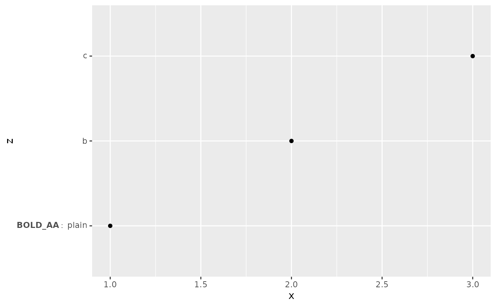

Create expression
labs_bold.RdSelectively bold label for ggplot2::ggplot2().
Details
The function bold text in variable (bold) and concatenates it
with string in (nonbold) and returns a dataframe.
Examples
library(dplyr)
#>
#> Attaching package: ‘dplyr’
#> The following objects are masked from ‘package:stats’:
#>
#> filter, lag
#> The following objects are masked from ‘package:base’:
#>
#> intersect, setdiff, setequal, union
library(ggplot2)
xxx <- tribble(
~x, ~z, ~w, ~y,
1, "BOLD_AA", " plain", 1,
2, "b", "b", 0,
3, "c", "c", 0
)
ggplot(xxx, aes_string(x = "x", y = "z")) +
geom_point() +
scale_y_discrete(
label = labs_bold(cond = xxx[["y"]], xxx[["z"]], nonbold = xxx[["w"]])
)
#> Warning: `aes_string()` was deprecated in ggplot2 3.0.0.
#> ℹ Please use tidy evaluation idioms with `aes()`.
#> ℹ See also `vignette("ggplot2-in-packages")` for more information.
#> [2026-04-13 16:55:33] > Dataout object from
#> the labs_bold function is created
